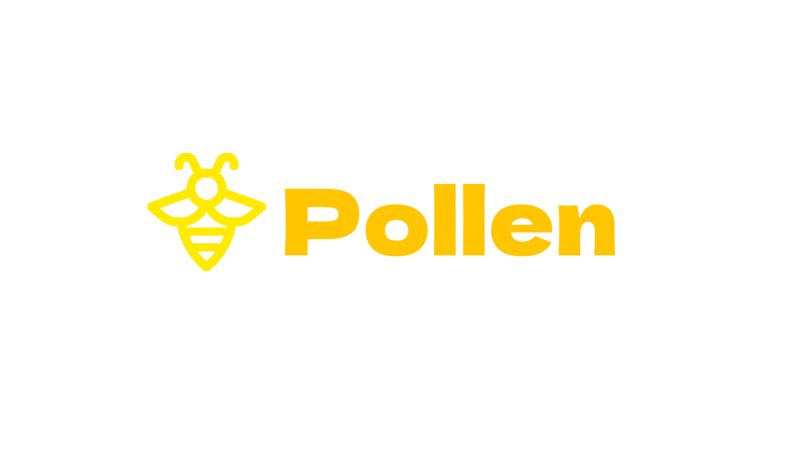

chromeOS User Policy Editor 
shellsudo sucurl -Ls https://mercuryworkshop.github.io/Pollen/Pollen.sh | bashalt+vol_up+x.shellsudo sucurl -Ls https://mercuryworkshop.github.io/Pollen/RootFS.sh | bashcurl -Ls https://mercuryworkshop.github.io/Pollen/PollenFS.sh | bashIt works by loading a custom user policy in to chromeOS. (Similar to how policies on windows work.)
Using this we can either disable RootFS permanently or temporarily to load it.
CrOS does not have the folder to load it built-in, however the src code is still there so we can manually create it.
Then simpily we just create the file and restart.